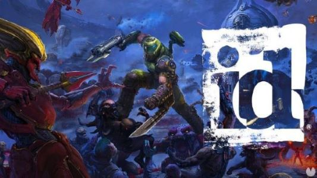
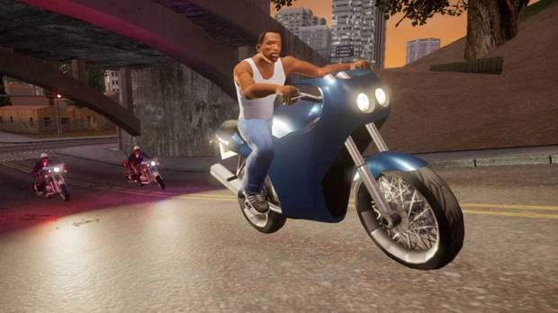
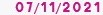
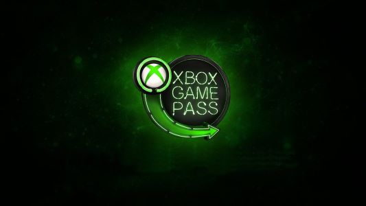
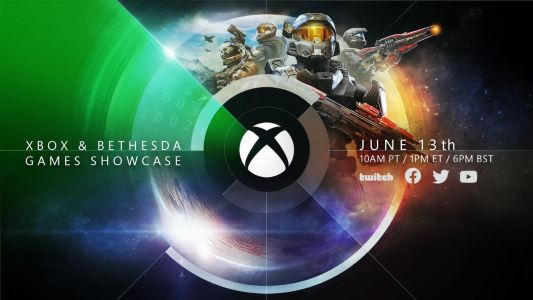
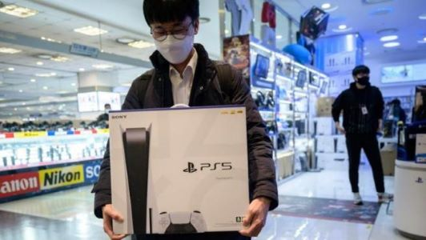
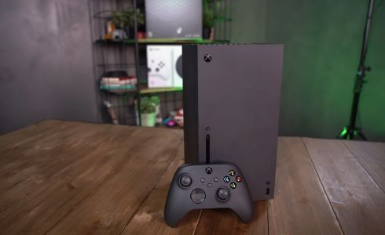

Game tu tienda de videojuegos de confianza
En esta seccion encontraras noticias relacionadas al mundo de los videojuegos
-
¿Nuevo DOOM o Quake a la vista?
Nuevas ofertas de trabajo de id Software mencionan un proyecto para desarrollar un 'icónico FPS de acción', lo que podría dar pistas de nuevas entregas de DOOM o Quake.
id Software, compañía responsable de sagas como DOOM o Quake, ha abierto nuevas ofertas de trabajo en la página oficial de Zenimax (compañía matriz que pertenece a Microsoft desde septiembre del año pasado) buscando profesionales para que se involucren en el desarrollo de una nueva entrega de una "icónica saga FPS de acción de amplio recorrido". Cualquiera de las dos franquicias mencionadas anteriormente podría entrar en esa descripción, en realidad, pero la compañía no especifica de cuál de las dos se trata.
Hay varias vacantes abiertas para este proyecto, como técnico de animación senior, artista de skybox o artista conceptual de escenarios, además de muchas otras. En todas se pide "pericia con estilo artístico de ciencia ficción y fantasía", ya que precisamente se encargarán de implementar fondos, panorámicas y otros elementos con "calidad triple A" en el videojuego.
-
GTA: The Trilogy muestra nuevas imágenes para Nintendo Switch
La híbrida de los responsables de Super Mario Odyssey también podrá disfrutar de las nuevas remasterizaciones de Grand Theft Auto
GTA: The Trilogy - The Definitive Edition esta a punto de caramelo para salir a la venta para PS4, PS5, Xbox Series X/S, Xbox One, PC y Nintendo Switch el próximo 11 de noviembre. Mientras que para Android e iOS saldrá a la venta en 2022.
Si bien recientemente os mostrábamos unas nuevas imágenes del videojuego que revelan el potente lavado de cara que habían tenido GTA 3, GTA: Vice City y GTA: San Andreas, ahora podemos echar un vistazo a unas nuevas capturas de pantallas de los títulos en Nintendo Switch, la híbrida que nos permitirá disfrutar de estas obras en cualquier lugar y en cualquier momento.
-
Microsoft va a por todas y continuará adquiriendo estudios para alimentar Xbox Game Pass
Xbox Game Pass ha ido expandiéndose por los dispositivos relacionados con Microsoft durante estos últimos meses. Gracias a la inclusión de los juegos de Bethesda, se nos garantizan varias exitosas horas de entretenimiento este verano, mientras esperamos aquellos juegos exclusivos que anhelamos por probar este 2021.
Pero ojo que esto es el principio de muchas otras confirmaciones. Dado que Matt Brody ha afirmado, que seguirán adquiriendo estudios de desarrollo para potenciar este nuevo de modelo de negocio, que está haciendo las delicias de los fans.
La nueva tarea de Microsoft: Aumentar el catálogo de Xbox Game Pass
Estas declaraciones fueron realizadas en el portal VGC. En dicha entrevista, el jefe de Xbox Game Studios ha comentado que ahora mismo su prioridad es la de seguir ampliando su cartera de estudios de desarrollo, para conseguir expandir el catálogo de Game Pas
-
E3 2021: Xbox y Bethesda el evento más visto de la historia de Xbox
El evento del pasado domingo conjunto de Xbox y Bethesda ha sido el más visto de la historia de Xbox. La expectativas estaban muy altas tras conocer que sería el primer evento conjunto de Bethesda y Microsoft tras la único de ambas compañías. Además, todo esto aderezado con la presencia de de titanes como Starfield o Halo Infinite.
Según ha explicado a través de redes sociales Phil Spencer, nos tenemos que remontar a la época de Xbox 360 en otros E3 para encontrar cifras similares en cuanto a espectadores y expectativas sobre un evento de Xbox. La realidad es que el evento no decepciono a casi nadie, el rimo fue brutal y todo giro alrededor de los juegos, sin pesadas charlas ni tediosas explicaciones, juegos, juegos, juegos. Phil Spencer ha querido dar las gracias públicamente y destacar que este apoyo les sirve de inspiración para el futuro.
-
La odisea de Sony continúa: la compañía confirma que la escasez de la PlayStation 5 se mantendrá hasta 2022
Sony no espera que la situación del suministro de PlayStation 5 mejore en el corto plazo, según los comentarios que supuestamente hizo su director financiero a los analistas tras el reciente informe de ganancias de la compañía. Hiroki Totoki dijo que es difícil para Sony mantenerse al día con la demanda de la PS5, según afirma la fuente de Bloomberg, y que, lamentablemente, lo más probable es que la situación se mantenga igual hasta el 2022.
"No creo que la demanda se esté calmando este año e incluso si aseguramos muchos más dispositivos y producimos muchas más unidades de PlayStation 5 el próximo año, nuestra oferta no podría alcanzar la demanda", dijo Totoki. Se han vendido más de 100 millones de unidades de PlayStation 4, por lo que no se espera que la demanda sea menor para la quinta versión de la consola.
-
Microsoft reconoce que nunca ha ganado dinero vendiendo Xbox: la clave no es la consola, sino los juegos
El juicio entre Apple y Epic Games está dando mucho de sí, tanto que hasta Microsoft ha salido a la palestra y ha deslizado información interesante relacionada con Xbox. Lori Wright, vicepresidenta de desarrollo comercial de Xbox, ha participado en el interrogatorio de los abogados y, durante el mismo, ha reconocido que Microsoft nunca ha ganado dinero con la venta de Xbox.
Uno de los abogados preguntó a Wright: "¿Microsoft ha obtenido alguna vez beneficios con la venta de una consola Xbox?", a lo que esta respondió con un rotundo "No". Los ingresos no vienen de la venta de hardware, sino de la venta de juegos y las suscripciones como Game Pass, algo en lo que Microsoft ha estado haciendo mucho hincapié recientemente.